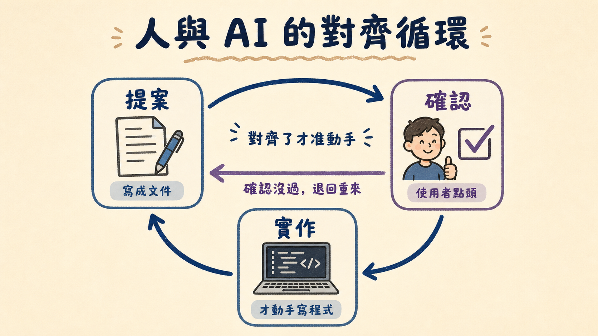
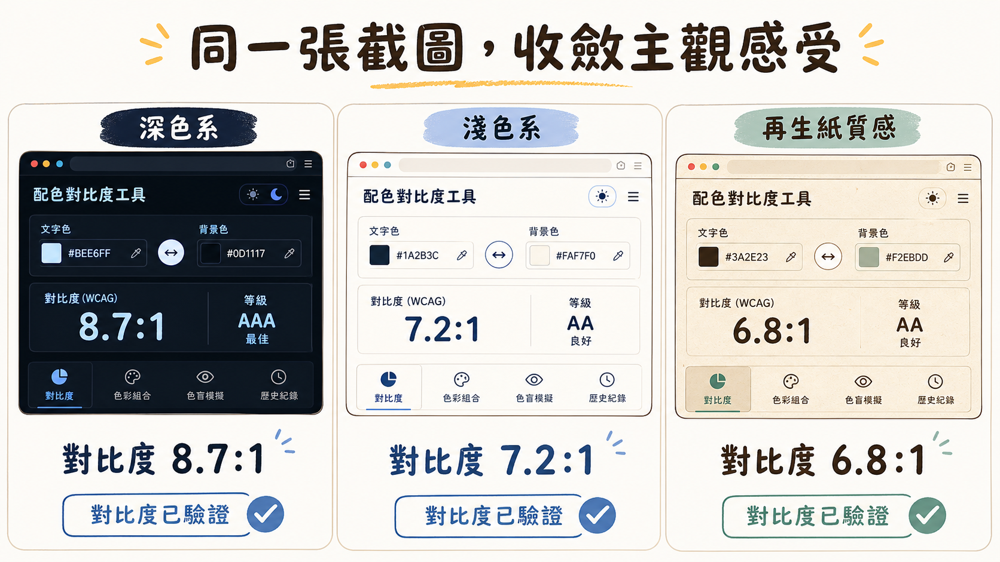

如果懶得對齊，會發生什麼事
想像一種最省事的做法：需求丟出去，馬上開始寫程式，寫到哪算到哪，有問題再改。聽起來很有效率，對吧？
問題是，這種做法會養出一種很危險的東西——看起來做完了，其實沒做完。
這個專案的開發過程裡就真實上演過一次。第一輪資安強化時，宣稱已經把 CDN 載入的第三方腳本「加上 SRI 強化保護」，聽起來很扎實。結果後來重新檢查才發現，實際上只加了一個 crossorigin="anonymous" 屬性，真正負責驗證檔案有沒有被竄改的 integrity 雜湊值，根本沒寫上去。crossorigin 只是決定瀏覽器要不要帶身分憑證去要檔案，跟「這個檔案有沒有被人動過手腳」完全是兩件事。等於貼了一張「已消毒」的貼紙，但完全沒消毒。
這不是誰騙誰，而是「沒有對齊檢查點」的必然結果——沒有人在半路停下來，把「我以為做了」跟「實際做了什麼」兩張圖攤開來對一次，錯誤就會安安靜靜地躺在那裡，直到某次認真複查才被挖出來。
所以這個專案從第一天開始，就沒有選那條省事的路，而是選了一條每走一步都要「先對齊、再動手」的路。
先把畫面搬成一份文件，才准動手蓋房子
整個開發流程有一個很固定的節奏：提案 → 確認 → 才實作。這聽起來像廢話，但真正決定成敗的細節，是「確認」這件事到底發生在哪裡。
如果確認只發生在嘴巴上——「嗯，這樣可以」——那三天後大家對「這樣」的記憶就會開始各自漂移。所以這個專案的做法是：每一次確認，都要先落地成一份看得到、存得住的檔案。

一開始，需求是「做一個 PDF 轉 JPG 的純網頁工具，一次限傳一個檔案，自動逐頁轉圖，一鍵打包下載，完全不碰後端伺服器，將來要放上 GitHub Pages」。這句話被拆解成技術可行性評估：瀏覽器端用 PDF.js 把每一頁畫到 <canvas> 上，用 Canvas.toBlob 轉成 JPG，再用 JSZip 把所有圖片包成一個壓縮檔觸發下載——全部都是純前端能做到的事。這些評估不是說完就算，而是變成了兩份實體檔案：proposal.md（寫清楚為什麼做、要做什麼、影響範圍）和 tasks.md（拆成一條一條、每條都附驗收情境的任務清單）。連驗收條件都先寫好：上傳非 PDF 或一次傳多個檔案要擋下來、轉檔要有即時進度與預覽、下載要能一鍵打包全部頁面。
一直到這份文件被點頭確認，程式碼才真正開始寫。index.html、css/style.css、js/converter.js、js/app.js 一個個生出來，還多做了一件不少專案會跳過的事——建了一個 test.html 當作 TDD 單元測試的執行台，讓「檔案驗證邏輯對不對」「ZIP 打包封裝對不對」有機器可以每次重新檢查一次，而不是只靠肉眼掃過去覺得「應該沒問題」。
七項任務全部打勾之後，整份規劃文件被搬進 sdd/archive/ 封存——不是刪掉，是留著當歷史紀錄，證明這個階段真的走完了。
這整套「先寫成檔案、確認了才動手」的節奏，其實就是把「你腦子裡的畫面」和「AI 認知裡的畫面」，用白紙黑字的方式反覆核對，直到兩邊真的長得一樣為止。這是最枯燥、但也最扎實的對齊方式。
兩輪震撼複查：發現「做完」跟「做對」根本是兩回事
工具能動了，不代表它經得起看。於是進入了整個故事裡最有戲劇張力的段落——請一雙資深的眼睛，重新把每一行程式碼看過一遍。
第一輪複查一口氣揪出十二個問題，嚴重程度從「CSS 寫錯字」到「有安全隱患」都有。最尷尬的兩個，是計畫頁面裡把 CSS 的 Grid 單位 1fr 誤寫成邊框粗細，導致一條分隔線直接人間蒸發；還有一段顏色設定把十六進位色碼混進 rgba() 格式裡，同樣的低級失誤讓另一個邊框也失效。更棘手的是介面邏輯裡用 innerHTML 插入動態內容，雖然當下的資料是可信的，但這種寫法就像在門口放了一塊「暫時沒鎖」的牌子，日後功能一擴充很容易被鑽空子；另外每次轉檔都把整頁圖片轉成 base64 塞進陣列裡，一份五十頁的 PDF 就可能在記憶體裡吃掉超過兩百 MB，網頁用著用著就會變得又卡又重。這十二項問題全部被逐一修掉。
照理說，故事應該在這裡收尾了——但接下來發生的事，才是真正把這個專案往上拉一個層次的關鍵。
過了一段時間，又進行了第二次複查。這次沒有直接相信「上次修過了應該沒事」，而是把整份程式碼重新讀一遍。結果發現，上一輪修完之後，居然還殘留七個問題沒被抓到：拖曳上傳區被標成鍵盤可操作的按鈕，卻完全沒接鍵盤事件，純鍵盤使用者按下 Enter 或空白鍵，什麼反應都沒有；用來降低視覺疲勞的次要文字顏色，實際拿去跟背景色算對比度，只有 4.125:1，離無障礙規範要求的 4.5:1 差了一截；還有前面提到的那個「假消毒貼紙」——宣稱強化過的 SRI，其實從沒真的驗證過完整性。
這一輪最珍貴的地方，不是抓出了多少個問題，而是抓問題的方法整個升級了。不再滿足於「看起來邏輯是對的」，而是堅持每一項都要真的跑一次才算數：真的開一個瀏覽器上傳一份測試 PDF，看看安全性設定會不會意外把轉檔功能擋死；真的只用鍵盤操作一次，確認 Tab 跟 Enter 真的能把檔案選擇視窗叫出來；顏色對比度不是憑印象覺得「應該夠亮」，而是把公式寫成程式重新算一遍；CDN 上的檔案雜湊值也不是抄一份了事，而是重新下載、重新計算、跟官方數值逐字比對。
過程中還發生一件很誠實的插曲：原本以為三個頁面用的次要文字顏色都是同一種偏低對比度的顏色，動手修正時仔細一查才發現，其實只有一個檔案真的沒達標，另外兩個檔案本來就合格。這種發現自己判斷有誤、立刻誠實更正說法而不是硬凹的態度，反而讓整個複查流程更值得信任——畢竟一份會老實承認「我剛剛講錯了」的報告，比一份永遠自信滿滿的報告更可靠。
同一張截圖，兩個人才看得懂的默契
如果說邏輯漏洞還能靠測試抓出來，那「這個顏色好不好看」這種問題，就完全是另一種難題了——因為美感是主觀的，你腦子裡的「舒服」，跟另一顆大腦裡的「舒服」，從來就不是同一組數字。
這個專案的配色前前後後改了三次。最初是深色系，背景用接近純黑但帶一點暖調的深灰。後來提出「想要淺色系」，於是整組配色翻成米白色系，背景換成一種柔和的米白，同時參照另一套護眼設計規範裡「絕對不要用純白純黑當主色」的原則。過沒多久，又補了一句更具體的感受描述：「可以再保護眼睛一點，不要太亮，參考再生紙的感覺」。於是配色又做了第三次調整，這次改成偏灰、帶點卡其色調的再生紙質感，背景色從米白進一步往下修得更沉一點。

這三次調整最有意思的地方在於，每一次「感覺」被說出口之後，接下來發生的事都一模一樣：先把感覺翻譯成具體色碼，再用公式重新計算每一段文字對背景色的對比度數值，確保護眼的同時完全不犧牲可讀性；接著實際打開瀏覽器，把調整後的畫面截圖下來，讓兩邊看到的是同一張圖，而不是各自腦補的想像。
這才是解決「美感落差」的真正解法——不是靠更精準的形容詞，而是靠一張大家都看得到的畫面當作共同的錨點。「護眼」「不要太亮」「再生紙的感覺」這些詞本身很模糊，但只要每次都能把它們變成一張具體的截圖擺在眼前，模糊的感受就會一步步收斂成明確的共識，直到雙方看著同一張畫面，都能點頭說「對，就是這個」。
上線那天，麻煩自己送上門，也被自己擋下來了
工具打磨得差不多，終於要推上 GitHub 讓它見世面。過程比想像中曲折一點：本機原本連 git 倉庫都還沒建，一初始化才發現，遠端的倉庫其實早就存在一個提交紀錄——是 GitHub 自動幫忙生成的網頁部署設定檔。沒有選擇粗暴地覆蓋掉它，而是把本機的一切和遠端既有的紀錄合併在一起，兩邊的歷史都保留下來，才推上去。
推送成功後沒多久，一份自動觸發的背景資安審查主動跳了出來，抓到三個問題。其中最值得說的一項，正好呼應前面提過的「假消毒貼紙」——pdf.worker.min.js 這支負責繁重運算的背景程式，是透過一段網址字串動態載入的，這種載入方式沒辦法用一般網頁常見的完整性驗證標籤來保護，等於在供應鏈上留了一個沒鎖緊的窗口。
這一次，問題被真正解決了，而不是又貼一張標籤了事：改成手動把這支檔案下載下來，用瀏覽器內建的加密函式算出它的雜湊值，拿去跟官方公布的正確數值逐字比對，比對通過才把它轉成本地可信的資源使用；一旦比對不上，就直接拒絕載入並丟出錯誤，寧可轉檔功能罷工，也不執行來路不明的程式碼。為了確認這道防線是玩真的，還故意把比對用的雜湊值改成一整串假數字，測試看看系統會不會真的擋下來——結果它真的擋下來了，錯誤訊息乾脆俐落地跳出來說「完整性校驗失敗，疑似遭竄改，已拒絕載入」。確認機制有效之後，才把正確的雜湊值改回去。
故事到這裡其實已經可以收尾了，但接下來發生的事，才是真正把「資安」這件事從一次性任務，變成一種持續的習慣。
沒過多久，一款全新的自動化資安掃描工具剛好推出。與其等哪天出事才想起來要檢查，不如趁工具剛上線、狀態最新鮮的時候，主動把整個專案送進去掃一遍。這次掃描動用了完整的流程：先把專案拆解成六大區塊分頭盤點，針對每個區塊建立威脅假設，派出多路人馬各自找出可疑的地方，最後把找到的九個疑點（去除重複後剩七個）逐一送進由三位互相獨立的角色組成的審核小組交叉表決。
結果是：七個疑點，每一輪投票都是零票通過。查證後，沒有一個是真的漏洞，最終報告的狀態被標記為「已驗證」，發現數量是零。
這個乾淨的結果最後被鄭重地寫進了工具本身的頁面裡——獨立做成一張新卡片，跟原本那張基於架構推理寫成的資安說明卡片並排放在一起，但特意用不同的邊框顏色把兩者區隔開來，因為它們本質上是不同等級的證據：一個是論述，一個是真正跑過工具、被交叉驗證過的結果。首頁上也加了一個能點擊的小徽章，直接連到這張卡片所在的位置，讓兩個頁面之間形成一來一往的連動，而不是各自孤立存在。
這趟旅程真正留下來的東西
回頭看這整趟旅程，能動的網頁工具當然是成果之一，但真正撐起整個過程的，其實是幾個反覆出現的習慣：需求先說清楚、寫成看得見的文件、確認了才動手；每一個「應該沒問題」都要換成「真的跑過一次」；每一次模糊的感受都要落地成一張大家都看得到的畫面；每一次資安檢查都不當成終點，而是當成下一次檢查的起點。
畫面能不能從一顆腦袋，完整無損地搬進另一顆腦袋，靠的從來不是一次講清楚的運氣，而是一次又一次停下來對齊、一次又一次拿出證據、一次又一次老實面對「其實還沒做完」的耐心。這趟旅程走完之後留下來的，不只是一個能把 PDF 轉成 JPG 的小工具，更是一套走過一次、就會想再走一次的做事方法。
延伸閱讀
《Claude、Fable 與那些未知的事》 用「地圖與疆域」的比喻拆解人與 AI 之間的落差從何而來，並提出實作前、中、後三階段的對齊框架，是「先對齊、再動手」這個習慣背後更完整的理論版本。 《理解，是新的瓶頸》 談的是為什麼「讓 AI 把事情做完」還不夠，人類自己有沒有真正理解、能不能用具體可觀察的方式驗證理解，才是能不能持續參與創造的關鍵，呼應這趟旅程裡一次又一次靠截圖與具體數字收斂主觀感受的做法。這個 PDF 轉 JPG 小工具的開發過程，某種程度上就是這兩篇文章裡談的方法，被搬到一個真實專案裡跑過一遍之後留下的足跡。